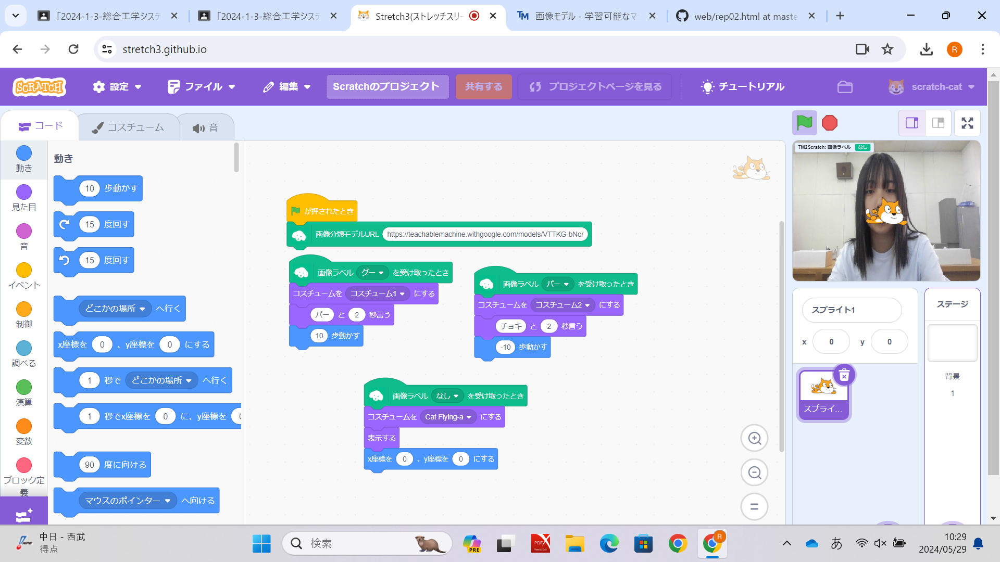
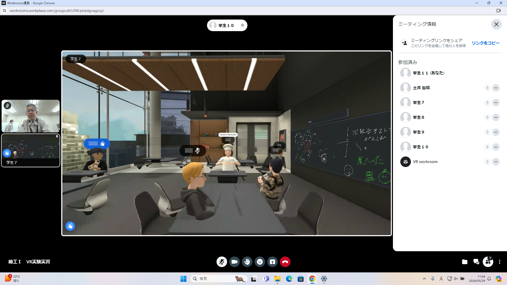

第2週目
2-1 2週目のレポートをHTMLで作る
1.内容
．人工知能の説明・機械学習の体験・Coding体験：3次元空間の描画・VR体験をした
2.感想
人工知能の仕組みについて理解が深まりました。VR体験はマイクがつき、その人本人の写真に
なると友達と集まらずに集まれるなと思いました。
2-2 機械学習体験

1.内容
Teachable Machine とストレッチ３を使ってグー・パー・で猫の動き
が変わるプログラムを作成した
2.感想
仕組みとやり方を理解できて楽しかったです。もっと細かく設定できるように
いろいろな学びたいと思いました。
2-3 VR（バーチャルリアリティー：Virtual Reality）会議室の体験

1.内容
VRを使って、会議室に入った。
4人が同じ部屋にいてペンで何かを書いたりした。本体をたたくとモノクロになり現実がみえる
2.感想
細かいところまで再現されていてすごかった。4人のVRが連動していたのが楽しかったです。
日常生活でも活用してみたいです